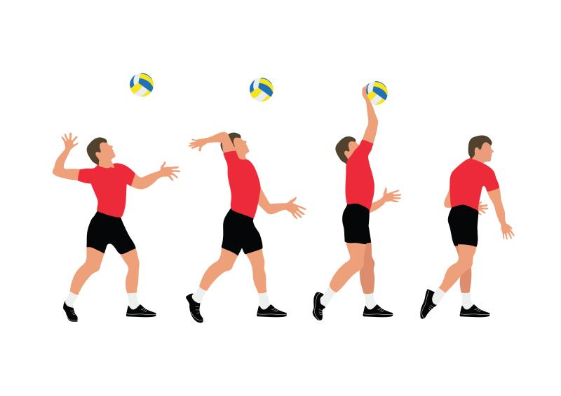

Volleyball Skills
Volleyball, the second most popular sport after soccer in the world has evolved within the last few decades. The major objective of the players of teams on either side of the net is to score at least 25 points. There are six basic volleyball skills which are necessary to know and absorb as a volleyball player. Time, target and focus are the major ingredients which help in making an efficient player. Before getting accustomed to the volleyball skills, make sure you are well aware of the rules which are required to be followed within the volleyball court. The six major skills in volleyball include serving, digging, setting, blocking, spiking, and passing.
